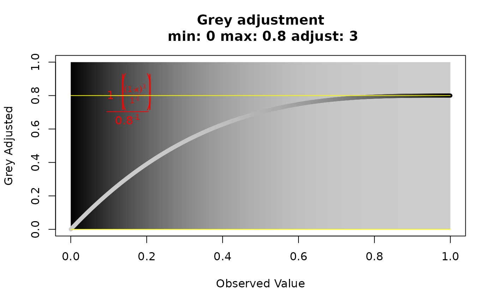

Display a greyscale gradient adjusted to specific parameters
Source:R/visualizations.r
greycurve.RdThis function has one purpose. It is for deciding the appropriate scaling for a grey palette to be used for edge weights of a minimum spanning network.
Arguments
- data
a sequence of numbers to be converted to greyscale.
- glim
"grey limit". Two numbers between zero and one. They determine the upper and lower limits for the
grayfunction. Default is 0 (black) and 0.8 (20% black).- gadj
"grey adjust". a positive
integergreater than zero that will serve as the exponent to the edge weight to scale the grey value to represent that weight.- gweight
"grey weight". an
integer. If it's 1, the grey scale will be weighted to emphasize the differences between closely related nodes. If it is 2, the grey scale will be weighted to emphasize the differences between more distantly related nodes.- scalebar
When this is set to
TRUE, two scalebars will be plotted. The purpose of this is for adding a scale bar to minimum spanning networks produced in earlier versions of poppr.
Value
A plot displaying a grey gradient from 0.001 to 1 with minimum and maximum values displayed as yellow lines, and an equation for the correction displayed in red.
Examples
# Normal grey curve with an adjustment of 3, an upper limit of 0.8, and
# weighted towards smaller values.
greycurve()

if (FALSE) { # \dontrun{
# 1:1 relationship grey curve.
greycurve(gadj=1, glim=1:0)
# Grey curve weighted towards larger values.
greycurve(gweight=2)
# Same as the first, but the limit is 1.
greycurve(glim=1:0)
# Setting the lower limit to 0.1 and weighting towards larger values.
greycurve(glim=c(0.1,0.8), gweight=2)
} # }